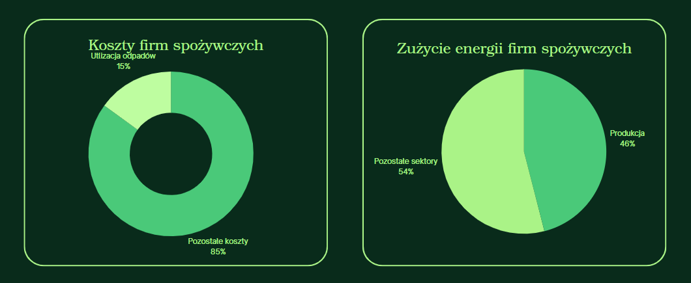

Problem
Firmy spożywcze ponoszą wysokie koszty utylizacji bioodpadów (do 15% wydatków operacyjnych) i energii elektrycznej (60% ich zużycia energetycznego). W 2026 roku wejdą w życie nowe obowiązki energetyczne – to rosnące wyzwanie dla MŚP.
Pain points
-
Wysokie koszty utylizacji odpadów organicznych:
• Odpady organiczne stanowią ok. 20% odpadów biodegradowalnych w Polsce.
• Koszty ich zagospodarowania sięgają 10–15% wydatków operacyjnych. -
Znaczne zużycie energii:
• MŚP odpowiadają za 46% zużycia energii w produkcji.
• Energia elektryczna to aż 60% tego zużycia. -
Nadchodzące regulacje od 2026 r.:
• Obowiązek audytu energetycznego przy zużyciu >2 778 MWh/rok.
• ISO 50001 wymagane przy zużyciu >23 611 MWh/rok. -
Konsekwencje dla firm:
• Mniejsza elastyczność operacyjna.
• Rosnąca presja na poprawę efektywności energetycznej i środowiskowej.
Rozwiązanie
mikrobiogazownie do 50 kW z innowacyjnym odzyskiem ciepła. Przekształcamy odpady w energię i nawóz, obniżając koszty i emisje.
Oferujemy:
- mikrobiogazownie do 50 kW – projektowane i wdrażane specjalnie dla MŚP z sektora spożywczego.
- Innowacyjny system odzysku ciepła – zwiększający efektywność energetyczną instalacji.
- Efektywne przetwarzanie odpadów organicznych – obniżenie kosztów utylizacji.
- Własna produkcja energii elektrycznej i cieplnej – zmniejszenie kosztów energii i zwiększenie niezależności energetycznej.
- Redukcja emisji gazów cieplarnianych – pozytywny wpływ na środowisko.
- Wytwarzanie pofermentu – ekologiczny nawóz jako produkt uboczny procesu.
Zrównoważona energia z odpadów – GAS Verde dla MŚP
GAS Verde oferuje kompaktowe, modułowe mikrobiogazownie o mocy do 50 kW, projektowane indywidualnie dla firm z sektora spożywczego (m.in. sklepy, mleczarnie, tłocznie oleju, gospodarstwa rolne). Instalacje przetwarzają bioodpady w energię elektryczną, ciepło i ekologiczny nawóz, znacząco obniżając koszty operacyjne i ślad węglowy przedsiębiorstw.
Status rozwoju:
- Projekt gotowy do implementacji po optymalizacji pod klienta
- “Turnkey solution” – kompleksowa dokumentacja wykonawcza dla pierwszej instalacji 20 kW
- Gotowość do szybkiego wdrożenia i skalowania dla różnych przedsiębiorstw
Strategia konkurencyjna:
- Kompaktowa, modułowa konstrukcja idealna dla małych i średnich firm
- Innowacyjny system odzysku ciepła zwiększający efektywność energetyczną
- Pełna obsługa – od projektu po optymalizację kosztów i śladu węglowego
- Wsparcie formalne i środowiskowe dla klienta
Rynek
Średnio 10–15% kosztów firm spożywczych to utylizacja odpadów. 46% zużycia energii przypada na produkcję. Wysokie zużycie = wysokie rachunki.
Kluczowe wyzwania dla MŚP w sektorze spożywczym
-
Wysokie koszty utylizacji odpadów:
Odpady organiczne stanowią 20% odpadów biodegradowalnych, a ich utylizacja kosztuje 10-15% budżetu firm.
Źródło -
Zużycie energii w MŚP:
46% energii w produkcji pochodzi z sektora MŚP, gdzie energia elektryczna stanowi 60% zużycia.
Źródło -
Nowe regulacje energetyczne:
Obowiązki audytów energetycznych i ISO 50001 wchodzą w życie od 2026 r., nakładając wymogi na zużycie energii.
Źródło -
Konkurencyjność i efektywność:
Firmy muszą optymalizować koszty i minimalizować ślad węglowy, by pozostać konkurencyjne na rynku.
Źródło
Model Biznesowy
GAS Verde projektuje mikrobiogazownie (20–50 kW) w formule E+PC – oferując dokumentację, analizę opłacalności, optymalizację energetyczną i pełne wsparcie formalne.
Sposób monetyzacji
Opłata za projekt ustalana indywidualnie na podstawie zakresu i skali wdrożenia.
Kluczowe wskaźniki (KPI)
-
ARPU
(Average Revenue Per User) -
MRR
(Monthly Recurring Revenue) - Czas realizacji projektu
- Marża brutto
Zespół
Gabriela Miodek
Specjalistka ds. środowiska z 10-letnim doświadczeniem w OZE i gospodarce odpadowej. Zarządza projektami i relacjami z klientami w branży spożywczej.
Agata Wałek
Inżynier procesowy z doświadczeniem w przetwórstwie spożywczym i rolnictwie. Adaptuje biogazownie do warunków terenowych i infrastruktury.
Szymon Kruk
Projektant technologii biogazu i odzysku ciepła. Ekspert w kogeneracji i systemach zamkniętego obiegu energii. Odpowiada za stronę technologiczną projektów.
Trakcja
1 kompletna dokumentacja
Gotowy projekt wykonawczy biogazowni 20 kW w modelu zintegrowanym dla sklepu spożywczego.
2 aktywne zapytania ofertowe
Biogazownie 30–50 kW dla zakładów mleczarskich i producentów jaj.
1 podpisany LOI
List intencyjny z regionalną siecią sklepów spożywczych.
5 analiz lokalizacyjnych
Dla obiektów generujących bioodpady – potencjalne lokalizacje pod nowe instalacje.
Plan wykorzystania kapitału
| Kategoria | Udział | Harmonogram |
|---|---|---|
| Zespół projektowy + 2–3 projekty pilotażowe | 45% | Q3–Q4 2025 |
| Rozwój narzędzi optymalizacyjnych (R&D) | 25% | Q3 2025 |
| Marketing i sprzedaż (B2B, materiały, strona) | 15% | Q4 2025 – Q1 2026 |
| Operacje, doradztwo, administracja | 15% | Q3 2025 – Q1 2026 |
Warunki inwestycji
Kapitał
1 000 000 zł
(ok. 30%–40%)
Forma
Udziały
(runda seed)
Wycena pre-money
1,5 – 2 mln zł